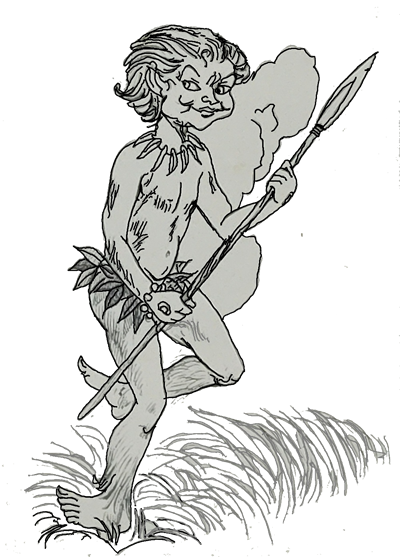

Depois de haverem permanecido na selva, o Arrelia e as cinco crianças, suas amiguinhas e companheiras de viagem, continuaram a excursão. Seguiram para conhecer vários lugares do Norte do Brasil onde, como sabemos, há verdadeiros tesouros históricos. Logo que chegaram procuraram um hotel, pois estavam bastante cansados da viagem de ônibus, a qual durara a noite toda. A estrada não era boa e as sacudidas do veículo haviam deixado os pobres completamente exaustos. Até Carlinhos, geralmente irrequieto, mal conseguia manter os olhos abertos. Mas durou pouco o desânimo dos nossos aventureiros. Depois de um bom banho, de um merecido repouso e de uma copiosa refeição, todos estavam prontos para os novos passeios. Saíram pela pequena, mas bonita cidade onde se encontravam, muito calma e acolhedora com seus velhos casarões coloniais.
Como o Arrelia já conhecia o lugar, seguia à frente da sua turminha, apontando com a bengala os locais e as casas mais interessantes. Quando chegaram a uma rua cheia de casarões muito bonitos, verdadeiros monumentos da arte do passado, ele, entusiasmado, apontou a bengala e quase acertou a cabeça de um velhinho que ia passando. Teria acertado se o homem não fosse ligeiro e não houvesse baixado a cabeça. O velhinho resmungou qualquer coisa e seguiu olhando para trás. O Arrelia e as crianças, porém, nada perceberam tão distraídos estavam. Continuando a apontar a bengala para as casas, o Arrelia disse às crianças:
- Vejam que “maraviulha”! Que valiosos tesouros!
Iberê fez uma cara de espanto, arregalou os olhos e exclamou:
- Tesouros? Há tesouros nessas casas?!
- Mas que menino! – disse o Arrelia. Não falei de tesouros de riquezas, entende? Falei de tesouros históricos! Eu quis dizer que essas casas tem muito que contar do passado!
Iberê ficou meio sem jeito, deu um suspiro e falou baixinho:
- Pensei que fossemos encontrar ouro. Como nesses contos que a gente lê.

Carlinhos, que havia conseguido manter-se calado até aquele momento, o que era de estranhar, não pode mais:
- Ei, Arrelia! Você disse que essas casas tem muito que contar. Elas não falam...
- Vocês são de morte. O Iberê queria encontrar ouro; você quer que as casas falem. Os tesouros que elas representam valem mais do que ouro e podem pertencer a qualquer um. Basta que a pessoa esteja disposta a descobri-los. E para descobri-los, basta ouvir o que essas casas têm para contar. Vocês já observaram quanta arte existe nelas? Já imaginaram quantas coisas aconteceram nestas ruas e dentro dessas paredes? Procurem adivinhar o que essas velhas casas viram durante tantos séculos. Elas têm vida!
Marisa, que estava segurando a mão do Arrelia, apertou-a ainda mais:
- Acho que tem vida mesmo! Olhem aquela ali, de duas janelas e porta no meio. Parece que está olhando pra gente!
Ouvindo esta observação, os outros caíram na gargalhada. Essa Marisa! Depois continuaram a andar. Paravam a cada momento para admirarem algum trabalho em pedra ou o relevo de uma daquelas pesadas portas, tão ao gosto dos antigos. Por fim, o Arrelia lembrou-se de um bosque perto da cidade. Não era igual à selva de onde haviam chegado. Apenas um pedaço que sobrara da antiga mata. Ali os habitantes da cidade costumavam fazer piqueniques aos domingos. Vários animais viviam naquele lugar. Muito mansos, não fugiam das pessoas. Ao contrário, comiam confiantemente o que lhes ofereciam. As crianças que acompanhavam o Arrelia, loucas como eram pela Natureza, pularam de contentamento. Nem parecia terem chegado tão recentemente da selva.
Foram seguindo. Todos andavam em ordem. Só Carlinhos não parava. Pegava uma pedra, achava um bichinho, corria atrás de uma borboleta. Mais adiante, uma coisa, vinda do ar, enrolou-se no pescoço de Jaci. Que grito deu ela. “Uma cobra!” As outras crianças, menos Carlinhos, trataram de correr. O Arrelia armou a bengala, pronto para a luta. Cobra? Era apenas um pedaço de borracha! Logo atrás, Carlinhos ria a mais não poder. Sentou-se no chão, rolou, levantou-se, tornou a sentar-se. O Arrelia tomou um ar muito sério:
- Ah diabinho! Isso é coisa que se “fauça”? Você quase matou a Jaci de susto!
- É só um pedaço de borracha! – respondeu Carlinhos, sem parar de rir.
- E como a Jaci ia saber? “Coitauda”! Ainda está tremendo!
O Arrelia abraçou Jaci, que de fato ainda tremia do susto, e os três continuaram a caminhada, encontrando-se com os outros que esperavam mais adiante, longe da “cobra”.
Chegaram ao bosque e as crianças não esconderam seu entusis=asmo diante da beleza que encontraram.
- Vejam como este bosque fica perto da cidade – disse o Arrelia. Seria bom que toda a cidade possuísse uma floresta assim, não é mesmo? Pode-se descansar sem ser preciso viajar muito. Observem como os animais daqui estão habituados com as pessoas. Não fogem!
- E ninguém judia deles? – perguntou Carlinhos, estranhando a confiança dos bichos.
- Não, o curupira não deixa.
As cinco crianças ficaram olhando o Arrelia com cara de espanto.

- Não sabem o que é curupira? É um menino de cabelos bem vermelhos, tem o corpo peludo, dentes verdes e os seus pés são virados: o calcanhar para a frente e os dedos para trás. É ele quem cuida dos animais da floresta. Dizem que esses ruídos misteriosos que vem da mata são causados por ele. Só tolera os caçadores que caçam por necessidade. Mas não tem pena dos caçadores maldosos, principalmente dos que matam os filhotes. Quando vê um caçador que mata por prazer, judia tanto dele, mas tanto que o pobre ou morre ou fica meio louco para sempre. Para proteger os animais, ele usa uma porção de modos a fim de iludir o caçador: gritos, assobios, gemidos. O caçador pensa que é um animal ou uma ave e vai atrás do curupira. Quando percebe, está perdido na floresta. Ao aproximar-se uma tempestade, o curupira corre toda a floresta e vai batendo nos troncos das árvores. Assim ele vê se elas estão fortes para aguentar a ventania. Se percebe que alguma árvore poderá ser derrubada pelo vento, ele avisa a “bicharauda” para não chegar perto da árvore condenada.
Os índios contavam uma estória sobre o curupira que é interessante vocês conhecerem. Depois contarei o que o curupira fez com um amigo meu, “coitaudo”. Pois é. Os índios contavam que uma vez o curupira estava andando pela floresta quando encontrou um caçador índio que dormia profundamente. O curupira estava com muita fome e cismou de comer o coração do homem. Assim, fez com que ele acordasse. O caçador levou um susto “daqueules”. Era, porém, muito controlado e fingiu que não estava com “meudo”. O curupira disse-lhe:
- Quero um pedaço de seu coração! O caçador, que também era muito esperto, lembrando-se que havia morto um macaco, entregou ao curupira um pedaço do coração do bichinho. O curupira provou, gostou e quis comer tudo.
- Quero mais! Quero o resto! – pediu ele.
O caçador entregou-lhe o que havia sobrado do coração do macaco mas em troca exigiu um pedaço do coração do curupira.
- Fiz sua vontade, não fiz? Agora você deve dar-me em pagamento um pedaço de seu coração – disse o caçador.
O curupira não era muito esperto e acreditou que o caçador havia arrancado o próprio coração sem ter sofrido nenhuma dor e sem haver morrido.
- Está certo – respondeu o curupira. Entregue-me sua faca e farei sua vontade.

O caçador entregou-lhe a faca e afastou-se o mais que pode, temendo levar uma facada. O curupira, porém, estava sendo sincero. Enterrou a faca no próprio peito e tombou sem vida. O caçador não esperou mais. Disparou pela floresta com tal velocidade que deixaria para trás os bichos mais rápidos da mata. Quando chegou à aldeia, estava com a língua de fora e prometeu a si próprio não voltar nunca mais à floresta. Pensou: “Desta escapei. Noutra é que não caio.” E assim foi. Durante um ano o índio não quis saber de entrar na mata. Quando lhe perguntavam por que não saía mais da aldeia, ele se desculpava dizendo estar doente. Não contava, porém, que era “meudo” e não doença.
O caçador tinha uma filha que era muito vaidosa. Como ia haver uma festa dentro de poucos dias, ela pediu ao pai um colar de presente:
- Quero um colar que seja diferente de todos os que já vi!
O índio era um pai muito dedicado e começou a pensar de que modo poderia satisfazer o desejo da filha. Lembrou-se então dos dentes verdes do curupira. Dariam um bonito colar, sem dúvida. Partiu para a floresta e procurou o lugar onde o curupira havia morrido. Depois de algumas voltas deu com o esqueleto meio encoberto pelo mato. Os dentes verdes brilhavam ao Sol, parecendo esmeraldas. Conseguindo vencer o receio, apanhou o crânio do curupira e começou a dar com ele no tronco de uma árvore para que se despedaçasse e soltasse os dentes.
Imaginem a sua surpresa quando viu o curupira voltar à vida de repente. Ali estava ele exatamente como antes, parecendo que nada havia acontecido. O susto foi tão grande que o caçador não conseguiu dar um passo sequer. “Estou perdido!” – pensou. Mas por sorte o curupira acreditou que o caçador o ressuscitaria de propósito e ficou todo contente:
- Muito obrigado! Você devolveu-me a vida e não sei como agradecer-lhe!
O índio percebeu que estava salvo e respondeu que não havia sido nada, O curupira não tinha que agradecer. O curupira, porém, achou necessário pagar o favor. Pensou, pensou e por fim disse:
- Tome este arco e esta flecha. São mágicos. Basta que você olhe para a ave ou animal que deseja caçar e atire. A flecha não errará o alvo. Nunca mais lhe faltará caça. Mas agora ouça bem: jamais aponte para uma ave ou animal que esteja em bando pois você seria atacado e despedaçado pelos companheiros deles. Entendeu?

O índio disse que sim e desde aquele momento não mais lhe faltou caça. Era só atirar a flecha e zás! O bicho caía. Tornou-se o maior caçador de sua tribo. Não errava nunca. Por onde passava era olhado com respeito e admiração, mesmo por seus inimigos.
Um dia ele estava caçando com outros companheiros que não tinham mais palavras para elogiá-lo. O índio sentiu-se tão importante que ao ver um bando de pássaros que se aproximava, não mais se lembrou da recomendação do curupira. “Talvez eu consiga flechar vários pássaros de uma vez e meus amigos ficarão mais surpresos ainda.” E disparou a flecha. Matou somente um pássaro e, como o curupira avisara, foi atacado pelo bando enlouquecido por causa da perda do companheiro. Bicada daqui, bicada dali, o índio não teve salvação. De seus amigos não ficou um. Mal perceberam que o grande caçador estava perdido, dispararam pela floresta, deixando-o entregue à própria sorte. Que “bandiudos”, não?
O pobre do índio foi todo desmontado pelos pássaros. Quando eles partiram, a cabeça do caçador estava num lugar, um braço lá longe, uma perna aqui, outra acolá... Tudo esparramado. O curupira, que ia passando, ficou com pena dele. Arranjou cera e acendeu um fogo para derretê-la. Depois juntou os pedaços do caçador e ligou-os com a cera. O índio voltou à vida e levantou-se:
- Muito obrigado! Não sei como agradecer-lhe!
- Não tem o que agradecer – respondeu o curupira. Mas lembre-se! Esta foi a primeira e última vez que pude salvá-lo! Portanto preste atenção! Não beba nem coma nada que esteja quente! Se o fizer, a cera se derreterá e você também!
Durante muito tempo o índio levou uma vida quase normal. Só precisava tomar cuidado para não comer nem beber nada quente. Ninguém sabia o que lhe havia acontecido. Nem sua mulher. Quando ela estranhava o cuidado do marido, ele dizia-lhe que estava agindo assim por causa de um corte na língua que por certo logo passaria. Um dia sua mulher lhe serviu uma comida apetitosa e bem quente, mas tão apetitosa que o índio nem se lembrou que a cera podia derreter-se. Engoliu a comida e pronto! Não só a cera se derreteu mas também o próprio índio. Gostaram?
- Coitado, não, Arrelia? – exclamou Marisa com cara de pena.
- É verdade. Mas há certas coisas que não podem ser esquecidas senão a gente se derrete “toudo”!

- E o colar? – perguntou Jaci, que gostava de saber tudo direitinho. A filha dele não ficou aborrecida? Você não disse o que aconteceu.
O Arrelia ficou espantado com a curiosidade da menina. Pensou, pensou e respondeu:
- Não sei, ué. Acho que arranjou outro na ocasião. Ou deu uma desculpa. Você quer saber tudo, hein?
Carlinhos, contorcendo-se de impaciência, pediu:
- Conte agora o que aconteceu com seu amigo! Conte, Arrelia!
- É mesmo! Já nem me lembrava! Se eu fosse o índio, já estaria derretido! Bem, vamos lá. Faz muito tempo. Eu tinha dois amigos caçadores: Paulino e João. Mas eram caçadores mesmo! Não pensavam noutra coisa. O mal é que Paulino gostava de exagerar um pouco. Um “poucão”, melhor dizendo. Assim, vivia contando que encontrava bichos enormes como ninguém havia visto: uma onça tão grande que podia fazer sombra para ele, uma cobra tão comprida que demorava vários minutos passando, e outros bichos mais. Todos haviam sido baleados por ele. Só não os carregava por serem muito pesados. Na verdade, ele só atirava em filhotes ou animais pequenos e mansos que não ofereciam perigo. João sabia disto, mas ficava quieto para não magoar o amigo. Tanto, porém, Paulino o amolou que João resolveu meter-lhe “meudo”. Assim, contou-lhe a estória do curupira e o caçador, dizendo-lhe como era o curupira e que costumava perseguir os caçadores imprudentes. Depois fingiu acalmar o amigo:
- Ainda bem que você mata apenas animais perigosos, pois quem mata animais fracos e indefesos como os filhotes encontrar o curupira.
Paulino ficou impressionado com o que ouviu. Continuou a caçar mas com receio de encontrar o curupira.

Vocês sabem que o caçador perseguido pelo curupira ou morre ou fica louco. Um dia, Paulino e João tinham ido caçar. Uma vez na floresta, separaram-se. Paulino viu um filhote e pum! Lá se foi o coitadinho. Aí Paulino ficou com tanto “meudo” que viu o curupira.
- Está na hora de você aprender uma lição – gritou o curupira e desapareceu.
Paulino ouviu um barulhão na mata e logo surgiu uma onça tão grande, mas tão grande que escureceu o Sol. Quando o caçador fugiu para o outro lado, foi obrigado a parar, pois uma cobra tão comprida estava passando que demorou vários minutos impedindo o caminho. Assim que terminou de passar, Paulino largou as pernas pelo caminho afora, louco para sair da floresta. Mas o curupira estava disposto a divertir-se com ele. E o pobre do caçador pagou por tudo o que havia feito. Correndo sempre, dava com bichos enormes e era obrigado a voltar. Então as próprias árvores se curvavam fechando-lhe o caminho. Já meio doido, subiu numa grande árvore de bastantes folhas e escondeu-se entre elas. De repente, quando menos esperava, todas as folhas transformaram-se em pássaros. Em pássaros furiosos que não tiveram pena dele. Atacado por todos os lados, o pobre jogou-se da árvore e caiu em cima de um espinheiro. Saiu dali que parecia um porco-espinho, gritando que dava dó. O outro caçador, o João, pensando que o amigo tivesse ido embora, desistiu de esperá-lo. Quando chegou ao lugar onde dormiam, estranhou a ausência de Paulino e ficou aguardando o amanhecer para sair à procura do amigo.
E o Paulino, pobre “deule”. Passou a noite inteira perseguido pelo curupira. De vez em quando abria a boca e gritava tão alto que fazia tremer a floresta: “Socorro! Socorro!” Nada. Mariposas duas vezes maiores do que ele derrubavam-no com as asas. Grilos do tamanho de um cavalo cruzavam sua frente, dando saltos mais altos do que as árvores. E tudo isto era acompanhado por gargalhadas terríveis, de arrepiar os “cabeulos”.
Paulino, procurando defender-se, passou a agarrar tudo o que encontrava. Até as árvores tiveram de enfrentar a fúria do caçador. Numa de suas lutas, pensou que houvesse agarrado o curupira mas estava lutando com as próprias pernas. Acertou uma dentada na própria canela e soltou um urro que fez até as onças correrem. Felizmente começou a amanhecer e João já estava à sua procura. Quando João o encontrou, Paulino parecia meio tantã. Não conseguiu reconhecer o amigo. Nem era para menos. João começou a falar com ele:
- Calma, Paulino! Sou eu, o seu amigo João. Lembra-se?
E Paulino, cobrindo o rosto com as mãos:
- Não, não, curupira! Chega! Não aguento mais! Vá embora!


Foi muito difícil a João conseguir levar o amigo. Precisou ir ao povoado para obter ajuda pois o homem estava mais feroz do que onça. Finalmente Paulino foi levado para casa e ficou um bom tempo sem sair do quarto. Todos os que lá entravam eram para ele o curupira.
Com o passar do tempo, foi melhorando, mas não voltou a ser o que havia sido. Caçar, então nem brincando. Só de ouvir falar o pobre ficava tremendo. Quanto a João, não pode mais visitar o amigo.
- Por que, Arrelia? – perguntou Jaci.
- Porque Paulino havia cismado que João era o curupira verdadeiro e culpado de suas alucinações.
Uma vez, quando João estava entrando no quarto de Paulino, este começou a gritar: “Acudam! Ele quer comer meu coração! Quer matar-me!”
Não teve jeito de explicar-lhe a verdade. Estava enfeitiçado pelo curupira. Nunca mais seria o mesmo. Quanto a João, também tenho “peuna” dele. Tão alegre e sorridente que era... Hoje não dá mais uma risada. E se fala com alguém, cobre sempre a boca com a mão e olha para todos os lados.
- Mas por que motivo, Arrelia? – quis saber Jaci, impaciente.
- Porque Paulino, achando que João é o curupira, cismou que ele tem os dentes verdes e prometeu arrancá-los para fazer um colar.